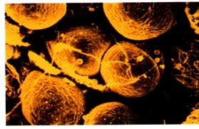
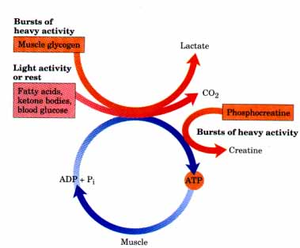
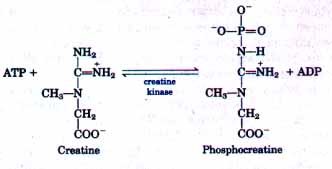
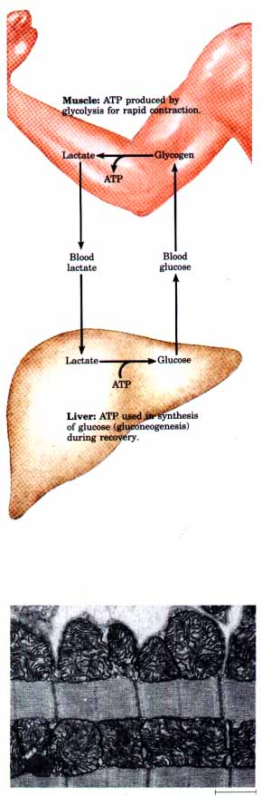
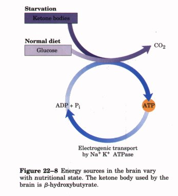
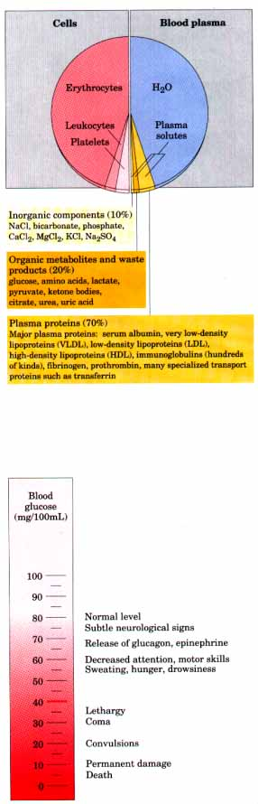

| Adipose tissue, which consists of
adipocytes (fat cells) (Fig. 22-4), is amorphous and
widely distributed in the body: under the skin, around
the deep blood vessels, and in the abdominal cavity. It
typically makes up about 15% of the mass of a young adult
human, with approximately 65% of this mass being in the
form of triacylglycerols. Adipocytes are metabolically
very active, responding quickly to hormonal stimuli in a
metabolic interplay with the liver, skeletal muscles, and
the heart. Like other cell types in the body, adipocytes have an active glycolytic metabolism, use the citric acid cycle to oxidize pyruvate and fatty acids, and carry out mitochondrial oxidative phosphorylation. During periods of high carbohydrate intake, adipose tissue can convert glucose via pyruvate and acetyl-CoA into fatty acids, from which triacylglycerols are made and stored as large fat globules. In humans, however, most fatty acid synthesis occurs in hepatocytes, not in adipocytes. Adipocytes store triacylglycerols arriving from the liver (carried in the blood as VLDLs) and from the intestinal tract, particularly after meals rich in fat. When fuel is needed, triacylglycerols stored in adipose tissue are hydrolyzed by lipases within the adipocytes to release free fatty acids, which may then be delivered via the bloodstream to skeletal muscles and the heart. The release of fatty acids from adipocytes is greatly accelerated by the hormone epinephrine, which stimulates the conversion of the inactive form of triacylglycerol lipase into its active form (see Fig. 16-3). Insulin counterbalances this effect of epinephrine, decreasing the activity of triacylglycerol lipase. Humans and many other animals, particularly those that hibernate, have adipose tissue called brown fat, which is specialized to generate heat rather than ATP during the oxidation of fatty acids (see Fig. 18-27). |
 Figure 22-4 Scanning electron micrograph of human adipocytes ( × 440 magnification). Capillaries and collagen fibers form a supporting network around adipocytes in fat tissues. Almost the entire volume of the cells is filled with fat droplets, which are very active metaboli.cally. |
| Skeletal muscle accounts for over 50% of
the total O2 consumption in a resting human being and up
to 90% during very active muscular work. Metabolism in
skeletal muscle is primarily specialized to generate ATP
as the immediate source of energy. Moreover, skeletal
muscle is adapted to do its mechanical work in an
intermittent fashion, on demand. Sometimes skeletal
muscles must deliver much work in a short time, as in a
100 m sprint; at other times more extended work is
required, as in running a marathon or giving birth. Skeletal muscles can use free fatty acids, ketone bodies, or glucose as fuel, depending on the degree of muscular activity (Fig. 22-5). In resting muscle the primary fuels are free fatty acids from adipose tissue and ketone bodies from the liver. These are oxidized and degraded to yield acetyl-CoA, which enters the citric acid cycle for oxidation to CO2. The ensuing transfer of electrons to O2 provides the energy for ATP synthesis by oxidative phosphorylation. Moderately active muscles use blood glucose in addition to fatty acids and ketone bodies. The glucose is phosphorylated, then degraded by glycolysis to pyruvate, which is converted to acetyl-CoA and oxidized via the citric acid cycle. However, in maximally active muscles, the demand for ATP is so great that the blood flow cannot provide O2 and fuels fast enough to produce the necessary ATP by aerobic respiration alone. Under these conditions, the stored muscle glycogen is broken down to lactate by fermentation, with a yield of two molecules of ATP per glucose unit degraded. Lactic acid fermentation thus provides extra ATP energy quickly, supplementing the basal ATP production resulting from the aerobic oxidation of other fuels via the citric acid cycle. The use of blood glucose and muscle glycogen as emergency fuels for muscular activity is greatly enhanced by the secretion of epinephrine, which stimulates the formation of blood glucose from glycogen in the liver and the breakdown of glycogen in muscle tissue. Skeletal muscle does not contain glucose-6phosphatase and cannot convert glucose-6-phosphate to free glucose for export to other tissues. Consequently, muscle glycogen is completely dedicated to providing energy in the muscle, via glycolytic breakdown. |
 Figure 22-5 Energy sources for muscle contraction: fuels used for ATP synthesis during bursts of heavy activity and during light activity or rest. ATP can be obtained rapidly from phosphocreatine. |
| Because skeletal muscles store
relatively little glycogen (about 1% of their total
weight), there is an upper limit to the amount of
glycolytic energy available during all-out exertion.
Moreover, the accumulation of lactate and the consequent
decrease in pH that occurs in maximally active muscles
reduces their efficiency. After a period of intense muscular activity, heavy breathing continues for some time. Much of the Oz thus obtained is used for the production of ATP by oxidative phosphorylation in the liver. This ATP is used for gluconeogenesis from lactate, carried in the blood from the muscles to the liver. The glucose thus formed returns to the muscles to replenish their glycogen, completing the Cori cycle (Fig. 22-6; see also Box 14-1). Skeletal muscles contain considerable amounts of phosphocreatine, which can rapidly regenerate ATP from ADP by the creatine kinase reaction. During periods of active contraction and glycolysis, this reaction proceeds predominantly in the direction of ATP synthesis (Fig. 22-5), but during recovery from exertion, the same enzyme is used to resynthesize phosphocreatine from creatine at the expense of ATP.  Heart muscle differs from skeletal muscle in that it is continuously active in a regular rhythm of contraction and relaxation. In contrast to skeletal muscle, the heart has a completely aerobic metabolism at all times. Mitochondria are much more abundant in heart muscle than in skeletal muscle; they make up almost half the volume of the cells (Fig. 22-7). The heart uses as fuel a mixture of glucose, free fatty acids, and ketone bodies arriving from the blood. These fuels are oxidized via the citric acid cycle to deliver the energy required to generate ATP by oxidative phosphorylation. Like skeletal muscle, heart muscle does not store lipids or glycogen in large amounts. Small amounts of reserve energy are stored in the form of phosphocreatine. Because the heart is normally aerobic and obtains its energy from oxidative phosphorylation, the failure of O2 to reach a portion of the heart muscle when the blood vessels are blocked by lipid deposits (atherosclerosis) or blood clots (coronary thrombosis) can cause this region of the heart muscle to die, a process known as myocardial infarction, more commonly called a heart attack. |
Figure
22-6 Metabolic cooperation
between sxeietal muscles and the liver. During extremely
active muscular work, skeletal muscle uses glycogen as
its energy source, via glycolysis. During recovery, some
of the lactate formed in the muscles is transported to
the liver and used to form glucose, which is released to
the blood and returned to the muscles to replenish their
glycogen stores. This pathway (glucose  lactate
glucose) constitutes the Cori cycle. lactate
glucose) constitutes the Cori cycle. Figure 22-7 Electron micrograph of heart muscle, showing the profuse mitochondria in which pyruvate, fatty acids, and ketone bodies are oxidized to drive ATP synthesis. This steady aerobic metabolism allows the human heart to pump blood at a rate of 5 quarts per minute, or 75 gallons per hour, or 18 million barrels in a 70 year lifetime. |
| The metabolism of the brain is
remarkable in several respects. First, the brain of adult
mammals normally uses only glucose as fuel (Fig. 22-8).
Second, the brain has a very active respiratory
metabolism; it uses almost 20% of the total O2 consumed
by a resting human adult. The use of O2 by the brain is
fairly constant in rate and does not change significantly
during active thought or sleep. Because the brain
contains very little glycogen, it is continuously
dependent on incoming glucose from the blood. If the
blood glucose should fall significantly below a certain
critical level for even a short period of time, severe
and sometimes irreversible changes in brain function may
occur. Although the brain cannot directly use free fatty acids or lipids from the blood as fuels, it can, when necessary, use D-β-hydroxybutyrate (a ketone body) formed from fatty acids in hepatocytes. The capacity of the brain to oxidize β-hydroxybutyrate via acetyl-CoA becomes important during prolonged fasting or starvation, after essentially all the liver glycogen has been depleted, because it allows the brain to use body fat as a source of energy. The use of β-hydroxybutyrate by the brain during severe starvation also spares muscle proteins, which become the ultimate source of glucose for the brain (via gluconeogenesis) during severe starvation. |

|
Glucose is oxidized by the glycolytic pathway and the citric acid cycle, providing almost all of the ATP used by the brain. ATP energy is required to create and maintain an electrical potential across the plasma membrane of neurons (Fig. 22-8). The plasma membrane contains an ATP-driven antiporter, the Na+K+ ATPase, which simultaneously pumps K+ ions into and Na+ ions out of the neuron (see Fig. 10-22). Because three Na+ ions are transported out and only two K+ ions are transported in for each molecule of ATP hydrolyzed, the Na+K+ ATPase is electrogenic-it generates an electrical potential difference across the neuronal membrane, with the inside negative relative to the outside. This transmembrane potential changes transiently as an electrical signal (action potential) sweeps from one end of a neuron to the other, as we will see later in this chapter (see Fig. 22-34). Action potentials are the chief method of information transfer in the nervous system.
| The blood flows through and connects all
of the tissues, mediating the metabolic interactions
among them. It transports nutrients from the small
intestine to the liver, and from the liver and adipose
tissue to other organs; it also transports waste products
from the tissues to the kidneys for excretion. Oxygen
moves in the blood from the lungs to the tissues, and CO2
generated by tissue respiration returns in the blood to
the lungs for exhalation. Blood also carries hormonal
signals from one tissue to another. In its role as signal
carrier, the circulatory system resembles the nervous
system; both serve to regulate and integrate the
activities of different organs. The average adult human has 5 to 6 L of blood. Almost half of this volume is occupied by three types of blood cells (Fig. 22-9): erythrocytes (red cells), filled with hemoglobin and specialized for carrying O2 and CO2; much smaller numbers of leukocytes (white cells) of several types, central to the immune system that defends against infections; and platelets, which help to mediate the blood clotting that prevents loss of blood after injury. The liquid portion is the blood plasma, which is 90% water and 10% solutes. The plasma is very complex in chemical composition; in it are dissolved or suspended a large variety of proteins, lipoproteins, nutrients, metabolites, waste products, inorganic ions, and hormones. Over 70% of the plasma solids are plasma proteins (Fig. 22-9). Major plasma proteins include immunoglobulins (circulating antibodies), serum albumin, apolipoproteins involved in the transport of lipids (as VLDL, LDL, HDL), transferrin (for iron transport), and blood-clotting proteins such as fibrinogen and prothrombin. The ions and low molecular weight solutes in the blood plasma are not fixed components, but are in constant flux between blood and various tissues. Dietary uptake of inorganic ions is, in general, counterbalanced by their excretion in the urine. For many of the components of blood, something near a dynamic steady state is achieved; the concentration of the component changes little, although a continual flux occurs from the digestive tract, through the blood, and to the urine. For example, almost regardless of the dietary intake of Na+, K+, and Ca2+, the plasma levels of these ions remain close to 140, 5, and 2.5 mM, respectively. Any significant departure from these values can result in serious illness or death. The kidneys play an especially important role in maintaining the ion balance, serving as a selective filter that allows waste products and excess ions to pass from the blood to the urine while preventing the loss of essential nutrients and ions. The concentration of glucose dissolved in the plasma is also subject to tight regulation. We have noted the requirement of the brain for glucose and the role of the liver in maintaining the glucose concentration near the normal level of 80 mg/100 mL of blood (about 4.5 mM). When blood glucose in a human drops to half this value (the hypoglycemic condition), the person experiences discomfort and mental confusion (Fig. 22-10); further reductions lead to coma, convulsions, and in extreme hypoglycemia, death. Maintaining the normal concentration of glucose in the blood is therefore a very high priority of the organism, and a variety of regulatory mechanisms have evolved to achieve that end. Among the most important regulators of blood glucose are the hormones insulin, glucagon, and epinephrine. Before considering their specific action, we turn now to a general discussion of hormones. |
Figure 22-9 The composition of blood. Whole blood is separated into blood plasma and cells by centrifugation. About 10% of blood plasma is solutes, of which about 10% consists of inorganic salts, 20% small organic molecules, and 70% plasma proteins. The major dissolved components are shown. Blood contains many other substances, often in trace amounts, including other metabolites, enzymes, hormones, vitamins, trace elements, and bile pigments. Measurements of the concentrations of components in blood plasma are important in the diagnosis and treatment of disease.  Figure 22-10 Physiological effects of low blood glucose in humans. Blood glucose levels of 40 mg/ 100 mL and below constitute severe hypoglycemia. |